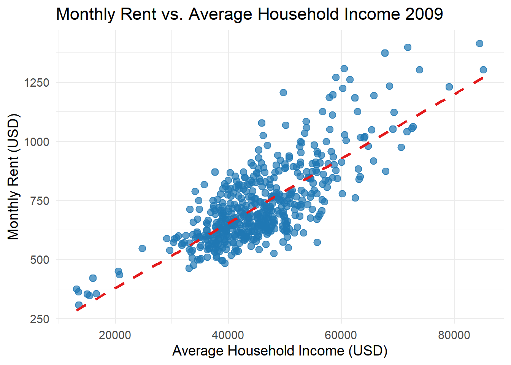
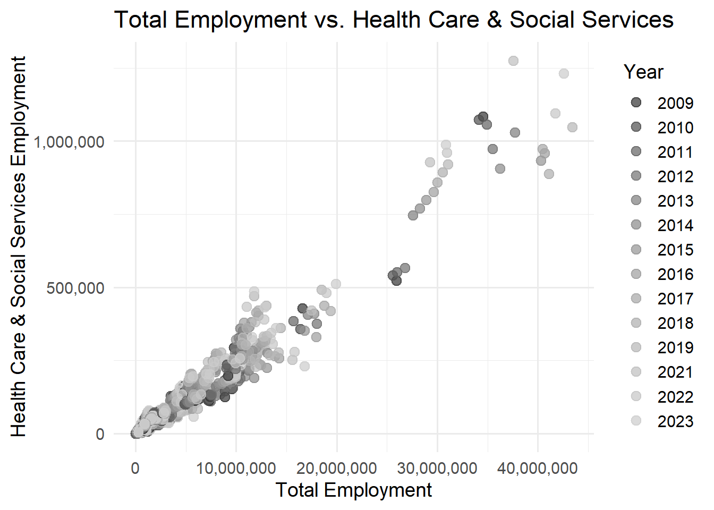
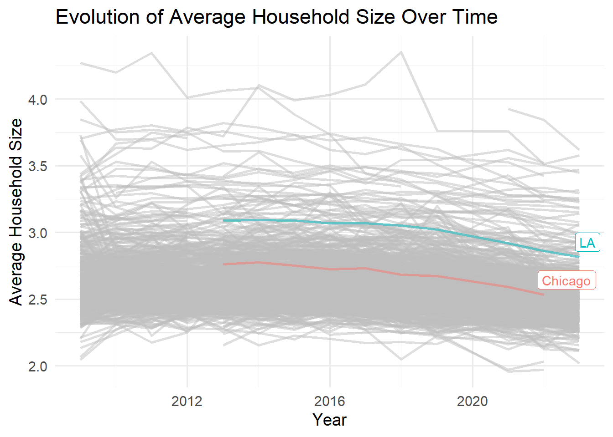
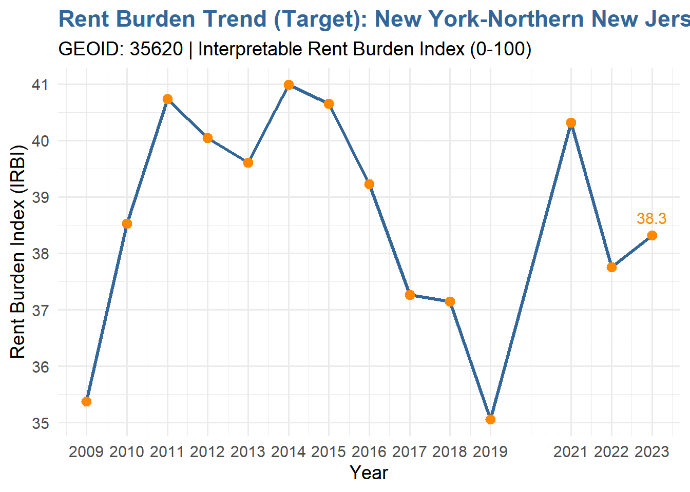
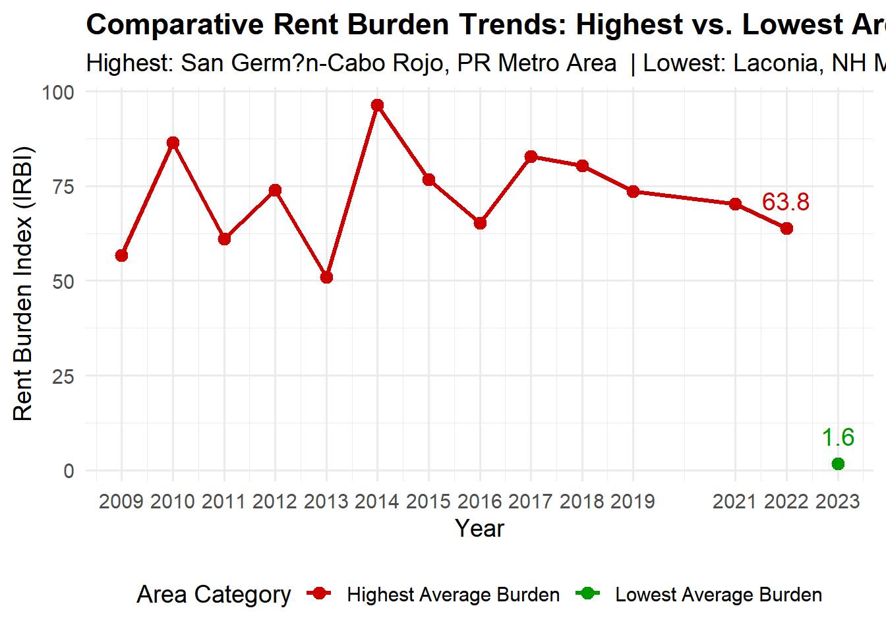
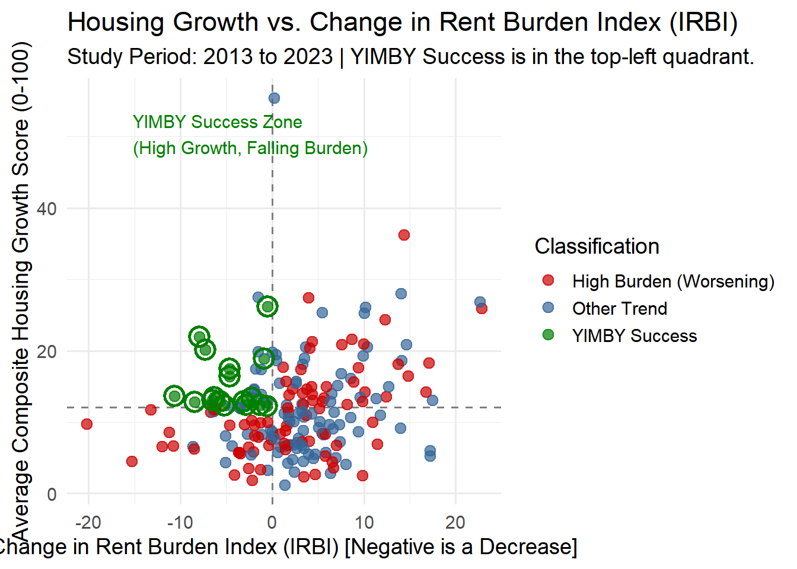
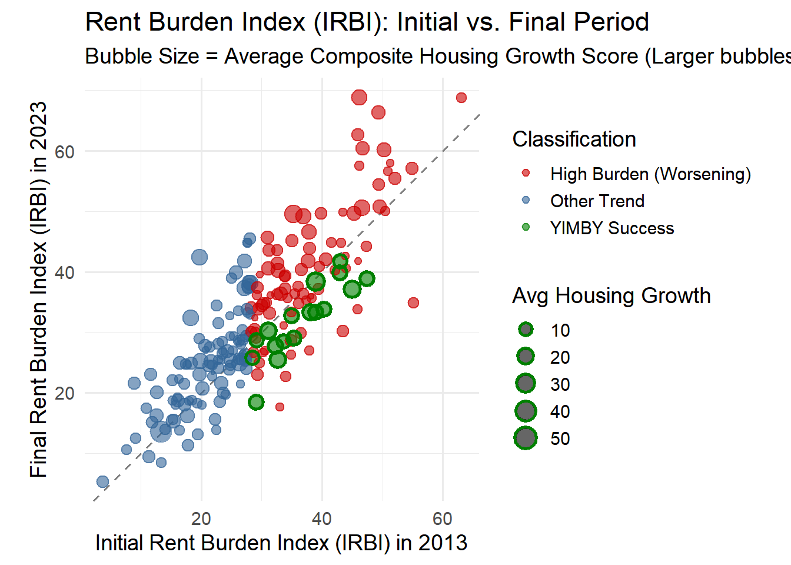

Data Relationship Diagram for ACS, BLS, and Census Datasets
Data Integration and Initial Exploration
1. Which CBSA (by name) permitted the largest number of new housing units in the decade from 2010 to 2019 (inclusive)?
Show the code
library(dplyr)# Join PERMITS to INCOME by CBSA/GEOID to get CBSA namespermits_named <- PERMITS %>%left_join(relationship ="many-to-many", INCOME %>%select(GEOID, NAME), by =c("CBSA"="GEOID"))# Filter years 2010–2019 and aggregatelargest_cbsa <- permits_named %>%filter(year >=2010, year <=2019) %>%group_by(CBSA, NAME) %>%summarise(total_permits =sum(new_housing_units_permitted, na.rm =TRUE),.groups ="drop") %>%# Ungroup after summariseslice_max(total_permits, n =1) # ensures exactly 1 row, even with ties# View resultlargest_cbsa
# A tibble: 1 × 3
CBSA NAME total_permits
<dbl> <chr> <dbl>
1 19100 Dallas-Fort Worth-Arlington, TX Metro Area 6451564
2. In what year did Albuquerque, NM (CBSA Number 10740) permit the most new housing units?
Show the code
library(dplyr)library(gt)cbsa_names <- INCOME %>%select(GEOID, NAME) %>%distinct()# Save the result to a variablealbuquerque_max <- PERMITS %>%left_join(relationship ="many-to-many", cbsa_names, by =c("CBSA"="GEOID")) %>%filter(CBSA ==10740) %>%group_by(NAME, year) %>%summarise(total_permits =sum(new_housing_units_permitted, na.rm =TRUE)) %>%arrange(desc(total_permits)) %>%slice(1)# Print to consolealbuquerque_max
# A tibble: 1 × 3
# Groups: NAME [1]
NAME year total_permits
<chr> <dbl> <dbl>
1 Albuquerque, NM Metro Area 2021 4021
3. Which state (not CBSA) had the highest average individual income in 2015?
Show the code
library(dplyr)library(stringr)# Create state abbreviation -> name mappingstate_df <-data.frame(abb =c(state.abb, "DC", "PR"),name =c(state.name, "District of Columbia", "Puerto Rico"))# Filter 2015 and compute total income per CBSAcbsa_income <- INCOME %>%filter(year ==2015) %>%left_join(HOUSEHOLDS %>%filter(year ==2015), by =c("GEOID", "NAME")) %>%mutate(total_income = household_income * households,state =str_extract(NAME, ", (.{2})") %>%str_replace(", ", ""))# Sum total income and total population by statestate_income <- cbsa_income %>%left_join(POPULATION %>%filter(year ==2015), by =c("GEOID", "NAME")) %>%group_by(state) %>%summarise(total_income =sum(total_income, na.rm =TRUE),total_population =sum(population, na.rm =TRUE),.groups ="drop" ) %>%mutate(avg_individual_income = total_income / total_population) %>%left_join(state_df, by =c("state"="abb")) %>%arrange(desc(avg_individual_income))# Top statetop_state_2015 <- state_income %>%slice(1)# Display nicely in a gt tabletop_state_2015 %>%gt() %>%tab_header(title ="State with Highest Average Individual Income in 2015" ) %>%fmt_number(columns =c(total_income, total_population, avg_individual_income),use_seps =TRUE,decimals =0 ) %>%cols_label(state ="State Abbreviation",name ="State Name",total_income ="Total Income",total_population ="Population",avg_individual_income ="Average Individual Income" )
State with Highest Average Individual Income in 2015
State Abbreviation
Total Income
Population
Average Individual Income
State Name
DC
202,663,489,140
6,098,283
33,233
District of Columbia
4. What is the last year in which the NYC CBSA had the most data scientists in the country?
Show the code
library(dplyr)library(stringr)library(gt)# Step 1: Filter for data scientists (NAICS 5182)data_scientists <- WAGES %>%filter(INDUSTRY ==5182)# Step 2: Convert BLS-style CBSA codes (FIPS like "C1234") to numeric to match Census GEOIDdata_scientists <- data_scientists %>%mutate(CBSA_numeric =as.double(paste0(str_remove(FIPS, "C"), "0")))# Step 3: Join to INCOME to get CBSA namesdata_scientists_named <- data_scientists %>%inner_join(INCOME %>%select(GEOID, NAME), by =c("CBSA_numeric"="GEOID"))# Step 4: For each year, find the CBSA with the most data scientiststop_cbsa_each_year <- data_scientists_named %>%group_by(YEAR) %>%slice_max(EMPLOYMENT, n =1) %>%ungroup() %>%select(YEAR, NAME, EMPLOYMENT) %>%arrange(YEAR)# Step 5: Find the last year NYC had the most data scientistslast_nyc_year <- top_cbsa_each_year %>%filter(str_detect(NAME, "New York")) %>%arrange(desc(YEAR)) %>%slice(1)# Step 6: Display in a nice tablelast_nyc_year %>%gt() %>%tab_header(title ="Last Year NYC CBSA Had the Most Data Scientists" ) %>%fmt_number(columns ="EMPLOYMENT",use_seps =TRUE ) %>%cols_label(NAME ="CBSA Name",YEAR ="Year",EMPLOYMENT ="Number of Data Scientists" )
Last Year NYC CBSA Had the Most Data Scientists
Year
CBSA Name
Number of Data Scientists
2015
New York-Northern New Jersey-Long Island, NY-NJ-PA Metro Area
18,922.00
5. What fraction of total wages in the NYC CBSA was earned by people employed in the finance and insurance industries (NAICS code 52)? In what year did this fraction peak?
library(gt)library(dplyr)# Calculate fraction by yearnyc_finance_by_year <- WAGES %>%filter(FIPS =="C3562") %>%# NYC CBSAgroup_by(YEAR) %>%summarise(total_wages =sum(TOTAL_WAGES, na.rm =TRUE),finance_wages =sum(TOTAL_WAGES[INDUSTRY >=5200& INDUSTRY <5300], na.rm =TRUE),fraction_finance = finance_wages / total_wages ) %>%ungroup()# Find the year when the fraction peakednyc_finance_peak <- nyc_finance_by_year %>%filter(fraction_finance ==max(fraction_finance)) %>%mutate(CBSA ="New York, NY") # Add CBSA name column for labeling# Display in a nice gt tablenyc_finance_peak %>%gt() %>%tab_header(title ="NYC CBSA: Year Finance & Insurance Wages Fraction Peaked" ) %>%fmt_number(columns =c(total_wages, finance_wages),decimals =0,use_seps =TRUE ) %>%fmt_percent(columns ="fraction_finance",decimals =2 ) %>%cols_label(CBSA ="CBSA Name",YEAR ="Year",total_wages ="Total Wages",finance_wages ="Finance & Insurance Wages",fraction_finance ="Fraction of Total Wages" )
NYC CBSA: Year Finance & Insurance Wages Fraction Peaked
Year
Total Wages
Finance & Insurance Wages
Fraction of Total Wages
CBSA Name
2021
3,636,399,927,489
145,892,464,795
4.01%
New York, NY
Initial Visualizations
1. The relationship between monthly rent and average household income per CBSA in 2009.
Show the code
library(ggplot2)library(dplyr)rent_income_2009 <- RENT %>%filter(year ==2009) %>%left_join(INCOME %>%filter(year ==2009), by =c("GEOID", "NAME"))library(viridis)ggplot(rent_income_2009, aes(x = household_income, y = monthly_rent)) +geom_point(color ="#1F78B4", size =3, alpha =0.7) +# muted bluegeom_smooth(method ="lm", se =FALSE, color ="#E31A1C", linetype ="dashed") +# red trend linelabs(title ="Monthly Rent vs. Average Household Income 2009 ",x ="Average Household Income (USD)",y ="Monthly Rent (USD)" ) +theme_minimal(base_size =14)

2. The relationship between total employment and total employment in the health care and social services sector (NAICS 62) across different CBSAs. Design your visualization so that it is possible to see the evolution of this relationship over time.
Show the code
# Filter health care & social serviceshealth_employment <- WAGES %>%filter(INDUSTRY >=6200& INDUSTRY <6300) %>%group_by(FIPS, YEAR) %>%summarise(health_emp =sum(EMPLOYMENT, na.rm =TRUE), .groups ="drop")# Total employment per CBSA per yeartotal_employment <- WAGES %>%group_by(FIPS, YEAR) %>%summarise(total_emp =sum(EMPLOYMENT, na.rm =TRUE), .groups ="drop")employment_df <- total_employment %>%left_join(health_employment, by =c("FIPS", "YEAR"))ggplot(employment_df, aes(x = total_emp, y = health_emp, color =as.factor(YEAR))) +geom_point(alpha =0.7, size =3) +scale_color_grey(start =0.2, end =0.8) +# light to dark gray for yearsscale_x_continuous(labels = scales::comma) +scale_y_continuous(labels = scales::comma) +labs(title ="Total Employment vs. Health Care & Social Services",x ="Total Employment",y ="Health Care & Social Services Employment",color ="Year" ) +theme_minimal(base_size =14)

3.The evolution of average household size over time. Use different lines to represent different CBSAs
Show the code
library(dplyr)library(ggplot2)library(gghighlight)# Create average household sizehousehold_size <- HOUSEHOLDS %>%left_join(POPULATION, by =c("GEOID", "NAME", "year")) %>%mutate(avg_household_size = population / households)# Shorten names for the legendhousehold_size <- household_size %>%mutate(short_name =case_when( NAME =="New York, NY Metro Area"~"NYC", NAME =="Los Angeles-Long Beach-Anaheim, CA Metro Area"~"LA", NAME =="Chicago-Naperville-Elgin, IL-IN-WI Metro Area"~"Chicago",TRUE~"Other" ))# Plot with gghighlightggplot(household_size, aes(x = year, y = avg_household_size, group = NAME, color = short_name)) +geom_line(size =1, alpha =0.5) +# lowlight other linesgghighlight(short_name !="Other", label_key = short_name) +# highlight key CBSAslabs(title ="Evolution of Average Household Size Over Time",x ="Year",y ="Average Household Size",color ="CBSA" ) +theme_minimal(base_size =14) +theme(legend.position ="bottom")

Rent Burden
Join Tables and Standartization and Initial calculation and print plots
Show the code
# Load necessary libraries for data manipulation and plottinglibrary(dplyr)library(ggplot2)# Define the target GEOID for New York AreaNY_GEOID <-35620# --- 1. Data Preparation and Standard Ratio Calculation ---# Join INCOME and RENT tables on common identifiersrent_burden_full <- INCOME %>%inner_join(RENT, by =c("GEOID", "NAME", "year")) %>%# Calculate the standard annual rent-to-income ratio: (Monthly Rent * 12) / Household Incomemutate(annual_rent_to_income_ratio = (monthly_rent *12) / household_income ) %>%# Handle potential Inf values resulting from household_income = 0mutate(annual_rent_to_income_ratio =ifelse(is.infinite(annual_rent_to_income_ratio), NA, annual_rent_to_income_ratio ) )# --- 2. Calculate Global Min/Max for Standardization ---# Find the global min and max of the ratio across ALL areas and years.min_ratio <-min(rent_burden_full$annual_rent_to_income_ratio, na.rm =TRUE)max_ratio <-max(rent_burden_full$annual_rent_to_income_ratio, na.rm =TRUE)# --- 3. Calculate Interpretable Rent Burden Index (IRBI) ---rent_burden_full <- rent_burden_full %>%mutate(# Apply Min-Max scaling: (X - X_min) / (X_max - X_min) * 100interpretable_rent_burden_index =case_when( max_ratio == min_ratio ~0, # Handle case with no variabilityTRUE~ (annual_rent_to_income_ratio - min_ratio) / (max_ratio - min_ratio) *100 ) )# --- 4. Identify Extremes (Highest and Lowest Average Rent Burden) ---# Calculate the average IRBI for each GEOID across all yearsavg_irbi_by_geoid <- rent_burden_full %>%group_by(GEOID, NAME) %>%summarise(avg_irbi =mean(interpretable_rent_burden_index, na.rm =TRUE), .groups ='drop')# Identify the GEOIDs with the highest and lowest average burdenhighest_burden_geoid <- avg_irbi_by_geoid %>%filter(avg_irbi ==max(avg_irbi, na.rm =TRUE)) %>%pull(GEOID) %>%first()lowest_burden_geoid <- avg_irbi_by_geoid %>%filter(avg_irbi ==min(avg_irbi, na.rm =TRUE)) %>%pull(GEOID) %>%first()# --- 5. Filter and Prepare Data for Both Plots ---# Data for New York (Plot 1)ny_plot_data <- rent_burden_full %>%filter(GEOID == NY_GEOID)# Combined Data for Extremes (Plot 2)extremes_plot_data <- rent_burden_full %>%filter(GEOID %in%c(highest_burden_geoid, lowest_burden_geoid)) %>%# CRITICAL: Ensure data completeness by removing rows where IRBI could not be computedfilter(!is.na(interpretable_rent_burden_index)) %>%# Create a category label for the legendmutate(Burden_Category =ifelse(GEOID == highest_burden_geoid, "Highest Average Burden", "Lowest Average Burden"))# --- 6. Plotting Function for New York (Single Plot) ---plot_ny_burden <-function(data) { area_name <-if (nrow(data) >0) {unique(data$NAME)[1] } else {paste("Area with GEOID", NY_GEOID) } p <- data %>%ggplot(aes(x = year, y = interpretable_rent_burden_index)) +geom_line(color ="#336699", size =1.2) +geom_point(color ="#FF8800", size =3) +geom_text(data = data %>%filter(year ==max(year)),aes(label =round(interpretable_rent_burden_index, 1)),vjust =-1,hjust =0.5,color ="#FF8800",size =4 ) +labs(title =paste("Rent Burden Trend (Target):", area_name),subtitle =paste("GEOID:", NY_GEOID, "| Interpretable Rent Burden Index (0-100)"),x ="Year",y ="Rent Burden Index (IRBI)" ) +theme_minimal(base_size =14) +theme(plot.title =element_text(face ="bold", color ="#336699")) +scale_x_continuous(breaks =unique(data$year))return(p)}# --- 7. Plotting Function for Extremes (Combined Plot) ---plot_extremes_combined <-function(data, highest_geoid, lowest_geoid) {# Get the names for the title highest_name <- data %>%filter(GEOID == highest_geoid) %>%pull(NAME) %>%first() lowest_name <- data %>%filter(GEOID == lowest_geoid) %>%pull(NAME) %>%first() p <- data %>%ggplot(aes(x = year, y = interpretable_rent_burden_index, color = Burden_Category, group = GEOID)) +geom_line(size =1.2) +geom_point(size =3) +# Annotate the last data point for each categorygeom_text(data = data %>%group_by(GEOID) %>%filter(year ==max(year)) %>%ungroup(),aes(label =round(interpretable_rent_burden_index, 1)),vjust =-1,hjust =0.5,show.legend =FALSE# Hide text from legend ) +labs(title ="Comparative Rent Burden Trends: Highest vs. Lowest Areas",subtitle =paste("Highest:", highest_name, " | Lowest:", lowest_name),x ="Year",y ="Rent Burden Index (IRBI)",color ="Area Category"# Legend Title ) +scale_color_manual(values =c("Highest Average Burden"="#CC0000", "Lowest Average Burden"="#009900")) +theme_minimal(base_size =14) +theme(plot.title =element_text(face ="bold"),legend.position ="bottom" ) +scale_x_continuous(breaks =unique(data$year))return(p)}# --- 8. Generate and Print Both Plots ---# Plot 1: New York Areaif (nrow(ny_plot_data) >0) { ny_plot <-plot_ny_burden(ny_plot_data)print(ny_plot)} else {print(paste("No time series data found for New York GEOID:", NY_GEOID))}

Show the code
# Plot 2: Highest vs. Lowest (Combined)if (nrow(extremes_plot_data) >0) { extremes_combined_plot <-plot_extremes_combined(extremes_plot_data, highest_burden_geoid, lowest_burden_geoid)print(extremes_combined_plot)} else {print("Error: Could not generate combined plot as complete data for extreme GEOIDs was missing.")}

Housing Growth
Show the code
# Load necessary librarieslibrary(dplyr)library(RcppRoll)library(tidyr)library(ggplot2)# Define the lookback windowWINDOW <-5# --- 1. Data Preparation and 5-Year Population Growth Calculation ---# Ensure GEOID/CBSA columns have consistent names for joining# PERMITS$CBSA must be renamed to GEOID to match POPULATION$GEOIDpermits_renamed <- PERMITS %>%rename(GEOID = CBSA)# Join POPULATION and PERMITS tableshousing_data_full <- POPULATION %>%inner_join(permits_renamed, by =c("GEOID", "year")) %>%# Group by CBSA (GEOID) to calculate time-series metricsgroup_by(GEOID) %>%arrange(year) %>%# Calculate 5-year lookback population and growthmutate(# Get population 5 years ago (population lag)population_lag_5yr =lag(population, n = WINDOW),# Calculate absolute population growth over 5 yearspopulation_growth_5yr = population - population_lag_5yr ) %>%ungroup()# --- 2. Metric Calculation, Aggregation, and Standardization ---# Note: We aggregate using a 5-year rolling mean on the calculated ratio to smooth yearly volatility.housing_metrics <- housing_data_full %>%# Group by CBSA (GEOID) again for rolling calculationsgroup_by(GEOID) %>%arrange(year) %>%# --- Metric A: Instantaneous Measure (Level-based) ---# Concept: New permitted units per 1,000 current residents.mutate(# 1a. Calculate the instantaneous ratioinstantaneous_ratio = (new_housing_units_permitted / population) *1000,# 1b. Apply a 5-year rolling mean to the ratio# window = 5, align="right" ensures we only use data up to the current year (inclusive)metric_A_rolling =roll_mean(instantaneous_ratio, n = WINDOW, align ="right", fill =NA) ) %>%# --- Metric B: Rate-Based Measure (Growth-based) ---# Concept: New permitted units per 1,000 units of 5-year population growth.mutate(# 2a. Calculate the rate-based ratio. We only calculate this for periods where growth > 0.rate_based_ratio =case_when( population_growth_5yr >0~ (new_housing_units_permitted / population_growth_5yr) *1000,TRUE~NA_real_# Set to NA if growth is zero or negative ),# 2b. Apply a 5-year rolling mean to the ratiometric_B_rolling =roll_mean(rate_based_ratio, n = WINDOW, align ="right", fill =NA) ) %>%ungroup()# --- 3. Standardization (Min-Max Scaling to 0-100) ---# Find global min/max for standardization, excluding NAsmin_A <-min(housing_metrics$metric_A_rolling, na.rm =TRUE)max_A <-max(housing_metrics$metric_A_rolling, na.rm =TRUE)min_B <-min(housing_metrics$metric_B_rolling, na.rm =TRUE)max_B <-max(housing_metrics$metric_B_rolling, na.rm =TRUE)housing_metrics_standardized <- housing_metrics %>%mutate(# Standardize Metric A (Housing per Capita)std_metric_A = (metric_A_rolling - min_A) / (max_A - min_A) *100,# Standardize Metric B (Housing per Growth)std_metric_B = (metric_B_rolling - min_B) / (max_B - min_B) *100 )# --- 4. Composite Score Calculation ---# Define Composite Score (Metric C) as the simple mean of the two standardized metrics.# A simple mean is a good composite because it equally weights the level (A) and rate (B) components.final_analysis <- housing_metrics_standardized %>%mutate(# Composite Score: Average of the two standardized metricscomposite_score = (std_metric_A + std_metric_B) /2 ) %>%# Remove the initial years where the 5-year lookback is incomplete (before 2014)filter(year >=min(year) + WINDOW -1)# --- 5. Generate Summary Tables (Focusing on the latest year of data) ---latest_year <-max(final_analysis$year, na.rm =TRUE)# Filter for the latest complete yearsummary_data <- final_analysis %>%filter(year == latest_year) %>%# Select and rename columns for clarity in outputselect(GEOID, NAME, year, std_metric_A, std_metric_B, composite_score)# Function to generate top/bottom summary tablesgenerate_summary <-function(data, metric, title) {# Sort for Top 5 (descending) top_5 <- data %>%arrange(desc({{metric}})) %>%slice_head(n =5) %>%mutate(Rank =row_number()) %>%select(Rank, GEOID, NAME, Score = {{metric}})# Sort for Bottom 5 (ascending) bottom_5 <- data %>%arrange({{metric}}) %>%slice_head(n =5) %>%mutate(Rank =row_number()) %>%select(Rank, GEOID, NAME, Score = {{metric}})# Combine and format output <-bind_rows(mutate(top_5, Category ="Top 5 (Highest Score)"),mutate(bottom_5, Category ="Bottom 5 (Lowest Score)") ) %>%select(Category, everything()) %>%rename(!!sym(paste0(title, " Score")) := Score)print(paste("--- Summary Table for:", title, "---"))print(output)}# Generate summaries for all three metricsgenerate_summary(summary_data, std_metric_A, "Instantaneous Housing Growth")
[1] "--- Summary Table for: Composite Housing Growth ---"
# A tibble: 10 × 5
Category Rank GEOID NAME Composite Housing Gr…¹
<chr> <int> <dbl> <chr> <dbl>
1 Top 5 (Highest Score) 1 48140 Wausau, WI Metro … 55.5
2 Top 5 (Highest Score) 2 39460 Punta Gorda, FL M… 43.0
3 Top 5 (Highest Score) 3 41100 St. George, UT Me… 37.0
4 Top 5 (Highest Score) 4 12420 Austin-Round Rock… 36.2
5 Top 5 (Highest Score) 5 35840 North Port-Braden… 34.4
6 Bottom 5 (Lowest Score) 1 34060 Morgantown, WV Me… 0.771
7 Bottom 5 (Lowest Score) 2 25620 Hattiesburg, MS M… 1.89
8 Bottom 5 (Lowest Score) 3 45460 Terre Haute, IN M… 2.40
9 Bottom 5 (Lowest Score) 4 39740 Reading, PA Metro… 2.48
10 Bottom 5 (Lowest Score) 5 39300 Providence-Warwic… 2.86
# ℹ abbreviated name: ¹`Composite Housing Growth Score`
Visualization
Show the code
# Load necessary librarieslibrary(dplyr)library(ggplot2)library(tidyr)# --- 0. Data Consolidation (Assuming previous steps have created final_analysis and rent_burden_full) ---# Since the complete data structures from previous steps (final_analysis and rent_burden_full)# are complex and not fully provided, we must rely on the structure established earlier.# The previous steps created:# 1. rent_burden_full: Contains GEOID, year, NAME, and interpretable_rent_burden_index (IRBI).# 2. final_analysis: Contains GEOID, year, NAME, and composite_score (Housing Growth).# 3. POPULATION: Still needed for total population growth calculation.# We will perform a full join of the two metric tables on GEOID and year.combined_metrics <-inner_join(rent_burden_full, final_analysis, by =c("GEOID", "NAME", "year")) %>%select(GEOID, NAME, year, IRBI = interpretable_rent_burden_index, CompositeScore = composite_score)# Define the start and end of the effective study period (after the 5-year rolling average window)START_YEAR <-min(combined_metrics$year, na.rm =TRUE)END_YEAR <-max(combined_metrics$year, na.rm =TRUE)# --- 1. Calculate YIMBY Criteria Metrics per CBSA ---# Calculate initial IRBI, IRBI change, average Composite Score, and total population growthyimby_summary <- combined_metrics %>%group_by(GEOID, NAME) %>%# Calculate IRBI changesummarise(initial_irbi = IRBI[year == START_YEAR],final_irbi = IRBI[year == END_YEAR],avg_composite_score =mean(CompositeScore, na.rm =TRUE),.groups ='drop' ) %>%# Merge back with POPULATION to get total growthinner_join(POPULATION %>%select(GEOID, year, population), by ="GEOID", relationship ="many-to-many") %>%# Recalculate summary with population datagroup_by(GEOID, NAME, initial_irbi, final_irbi, avg_composite_score) %>%summarise(pop_start = population[year == START_YEAR],pop_end = population[year == END_YEAR],.groups ='drop' ) %>%# Final calculation of change metricsmutate(irbi_change = final_irbi - initial_irbi,total_population_growth = pop_end - pop_start ) %>%# Remove areas that didn't have data across the full period (where summaries failed)filter(!is.na(initial_irbi) &!is.na(final_irbi) &!is.na(avg_composite_score))# --- 2. Identify YIMBY Successors based on all criteria ---# Define thresholds based on the calculated datamedian_initial_irbi <-median(yimby_summary$initial_irbi, na.rm =TRUE)mean_composite_score <-mean(yimby_summary$avg_composite_score, na.rm =TRUE)# Apply YIMBY criteriayimby_analysis_data <- yimby_summary %>%mutate(# Criteria 1: High Rent Burden (Early) -> Initial IRBI > Medianis_high_initial_burden = initial_irbi > median_initial_irbi,# Criteria 2: Decrease in Rent Burden -> IRBI Change is negativeis_irbi_decreasing = irbi_change <0,# Criteria 3: Population Growth -> Total Growth is positiveis_population_growing = total_population_growth >0,# Criteria 4: Above-Average Housing Growth -> Average Composite Score > Meanis_high_housing_growth = avg_composite_score > mean_composite_score ) %>%# Create the final YIMBY success labelmutate(YIMBY_Success =case_when( is_high_initial_burden & is_irbi_decreasing & is_population_growing & is_high_housing_growth ~"YIMBY Success", is_high_initial_burden ~"High Burden (Worsening)",TRUE~"Other Trend" ) )# Extract YIMBY Success CBSAsYIMBY_SUCCESS_CBSAS <- yimby_analysis_data %>%filter(YIMBY_Success =="YIMBY Success") %>%select(GEOID, NAME, initial_irbi, final_irbi, avg_composite_score)# --- 3. Visualization 1: Scatter Plot (Growth vs. Burden Change) ---# X-axis: Change in Rent Burden (IRBI) | Y-axis: Housing Growth (Composite Score)plot_1 <- yimby_analysis_data %>%ggplot(aes(x = irbi_change, y = avg_composite_score, color = YIMBY_Success)) +geom_hline(yintercept = mean_composite_score, linetype ="dashed", color ="gray50") +geom_vline(xintercept =0, linetype ="dashed", color ="gray50") +geom_point(alpha =0.7, size =3) +# Highlight the YIMBY success areasgeom_point(data =filter(yimby_analysis_data, YIMBY_Success =="YIMBY Success"), size =5, shape =21, stroke =1.5, fill =NA, color ="#008000") +# Label the YIMBY success quadrantannotate("text", x =min(yimby_analysis_data$irbi_change, na.rm =TRUE) +5, y =max(yimby_analysis_data$avg_composite_score, na.rm =TRUE) -5,label ="YIMBY Success Zone\n(High Growth, Falling Burden)", color ="#008000", size =4, hjust =0) +scale_color_manual(values =c("YIMBY Success"="#008000", "High Burden (Worsening)"="#CC0000", "Other Trend"="#336699")) +labs(title ="Housing Growth vs. Change in Rent Burden Index (IRBI)",subtitle =paste0("Study Period: ", START_YEAR, " to ", END_YEAR, " | YIMBY Success is in the top-left quadrant."),x ="Change in Rent Burden Index (IRBI) [Negative is a Decrease]",y ="Average Composite Housing Growth Score (0-100)",color ="Classification" ) +theme_minimal(base_size =14)print(plot_1)

Show the code
# --- 4. Visualization 2: Bubble Plot (Initial vs. Final Rent Burden) ---# X-axis: Initial IRBI | Y-axis: Final IRBI | Size: Average Composite Scoreplot_2 <- yimby_analysis_data %>%ggplot(aes(x = initial_irbi, y = final_irbi, size = avg_composite_score, color = YIMBY_Success)) +geom_abline(intercept =0, slope =1, linetype ="dashed", color ="gray50") +# Line of no changegeom_point(alpha =0.6) +# Highlight YIMBY success areasgeom_point(data =filter(yimby_analysis_data, YIMBY_Success =="YIMBY Success"), shape =21, stroke =1.5, fill =NA, color ="#008000", aes(size = avg_composite_score)) +# Target YIMBY quadrant: Above the median initial IRBI and below the 45-degree line (decreasing)labs(title ="Rent Burden Index (IRBI): Initial vs. Final Period",subtitle ="Bubble Size = Average Composite Housing Growth Score (Larger bubbles indicate more supply).",x =paste("Initial Rent Burden Index (IRBI) in", START_YEAR),y =paste("Final Rent Burden Index (IRBI) in", END_YEAR),color ="Classification",size ="Avg Housing Growth" ) +scale_color_manual(values =c("YIMBY Success"="#008000", "High Burden (Worsening)"="#CC0000", "Other Trend"="#336699")) +scale_x_continuous(limits =range(yimby_analysis_data$initial_irbi, na.rm =TRUE)) +scale_y_continuous(limits =range(yimby_analysis_data$final_irbi, na.rm =TRUE)) +theme_minimal(base_size =14) +coord_equal() # Ensure the 45 degree line is accurateprint(plot_2)

Policy Brief
Show the code
# Load necessary librarieslibrary(dplyr)library(tidyr)library(RcppRoll)# --- CONFIGURATION ---WINDOW <-5# 5-year lookback window# Threshold to ensure an industry is significant enough to be considered a "Top Industry"INDUSTRY_WAGE_CUTOFF <-1000000# --- PART 1: HOUSING GROWTH METRICS ---# Data Setup: Rename CBSA to GEOID for mergingpermits_renamed <- PERMITS %>%rename(GEOID = CBSA)housing_data_full <- POPULATION %>%inner_join(permits_renamed, by =c("GEOID", "year")) %>%group_by(GEOID) %>%arrange(year) %>%# Calculate 5-year lookback population and growthmutate(population_lag_5yr =lag(population, n = WINDOW),population_growth_5yr = population - population_lag_5yr ) %>%ungroup()# Metric A (Instantaneous) and Metric B (Rate-Based) calculationhousing_metrics <- housing_data_full %>%group_by(GEOID) %>%arrange(year) %>%mutate(instantaneous_ratio = (new_housing_units_permitted / population) *1000,metric_A_rolling =roll_mean(instantaneous_ratio, n = WINDOW, align ="right", fill =NA),rate_based_ratio =case_when( population_growth_5yr >0~ (new_housing_units_permitted / population_growth_5yr) *1000,TRUE~NA_real_ ),metric_B_rolling =roll_mean(rate_based_ratio, n = WINDOW, align ="right", fill =NA) ) %>%ungroup()# Standardization (Min-Max Scaling to 0-100)min_A <-min(housing_metrics$metric_A_rolling, na.rm =TRUE); max_A <-max(housing_metrics$metric_A_rolling, na.rm =TRUE)min_B <-min(housing_metrics$metric_B_rolling, na.rm =TRUE); max_B <-max(housing_metrics$metric_B_rolling, na.rm =TRUE)final_analysis <- housing_metrics %>%mutate(std_metric_A = (metric_A_rolling - min_A) / (max_A - min_A) *100,std_metric_B = (metric_B_rolling - min_B) / (max_B - min_B) *100,# Composite Score (Average of the two standardized metrics)composite_score = (std_metric_A + std_metric_B) /2 ) %>%filter(year >=min(year) + WINDOW -1) # Filter to years where 5-year lookback is possible# --- PART 2: RENT BURDEN (IRBI) CALCULATION ---rent_burden_full <- INCOME %>%inner_join(RENT, by =c("GEOID", "NAME", "year")) %>%mutate(annual_rent_to_income_ratio = (monthly_rent *12) / household_income,annual_rent_to_income_ratio =replace(annual_rent_to_income_ratio, is.infinite(annual_rent_to_income_ratio), NA) )min_ratio <-min(rent_burden_full$annual_rent_to_income_ratio, na.rm =TRUE)max_ratio <-max(rent_burden_full$annual_rent_to_income_ratio, na.rm =TRUE)rent_burden_full <- rent_burden_full %>%# IRBI: Min-Max scaled to 0-100mutate(IRBI = (annual_rent_to_income_ratio - min_ratio) / (max_ratio - min_ratio) *100 ) %>%select(GEOID, NAME, year, IRBI)# --- PART 3: INDUSTRY DOMINANCE CALCULATION (Modified for Industry Codes) ---wages_clean <- WAGES %>%# 1. Clean FIPS to numeric GEOIDmutate(GEOID =as.numeric(gsub("C", "", FIPS)),INDUSTRY_CODE =as.numeric(INDUSTRY)) %>%# Keep the code from WAGES# 2. Sum total wages across all years for ranking dominancegroup_by(GEOID, INDUSTRY_CODE) %>%summarise(total_wages_sum =sum(TOTAL_WAGES, na.rm =TRUE),.groups ='drop' ) %>%# 3. Rank industries within each CBSA by total wagesgroup_by(GEOID) %>%mutate(industry_rank =rank(desc(total_wages_sum), ties.method ="first") ) %>%ungroup() %>%# 4. Filter for the top 2 and apply a minimum wage cutofffilter(industry_rank <=2, total_wages_sum >= INDUSTRY_WAGE_CUTOFF)# Pivot top 2 industries to wide format for merging (Modified)top_industries_wide <- wages_clean %>%select(GEOID, industry_rank, INDUSTRY_CODE) %>%# Select the codepivot_wider(names_from = industry_rank,values_from = INDUSTRY_CODE, # Pivot the codenames_prefix ="Industry_Code_"# Use a clean prefix ) %>%# Clean up column names for readabilityrename(Industry1_Code = Industry_Code_1,Industry2_Code = Industry_Code_2 )# --- PART 4: YIMBY ANALYSIS, MERGING, AND RANKING ---# Combine Metrics (IRBI and Composite Housing Score)combined_metrics <-inner_join(rent_burden_full, final_analysis, by =c("GEOID", "NAME", "year")) %>%select(GEOID, NAME, year, IRBI, CompositeScore = composite_score)# Define the study period limits for YIMBY criteriaSTART_YEAR <-min(combined_metrics$year, na.rm =TRUE)END_YEAR <-max(combined_metrics$year, na.rm =TRUE)# Calculate YIMBY criteria metrics per CBSAyimby_summary <- combined_metrics %>%group_by(GEOID, NAME) %>%summarise(initial_irbi = IRBI[year == START_YEAR],final_irbi = IRBI[year == END_YEAR],avg_composite_score =mean(CompositeScore, na.rm =TRUE),.groups ='drop' ) %>%inner_join(POPULATION %>%select(GEOID, year, population), by ="GEOID", relationship ="many-to-many") %>%group_by(GEOID, NAME, initial_irbi, final_irbi, avg_composite_score) %>%summarise(pop_start = population[year == START_YEAR],pop_end = population[year == END_YEAR],.groups ='drop' ) %>%mutate(irbi_change = final_irbi - initial_irbi,total_population_growth = pop_end - pop_start ) %>%filter(!is.na(initial_irbi) &!is.na(final_irbi) &!is.na(avg_composite_score))# Apply YIMBY Success Criteriamedian_initial_irbi <-median(yimby_summary$initial_irbi, na.rm =TRUE)mean_composite_score <-mean(yimby_summary$avg_composite_score, na.rm =TRUE)yimby_analysis_data <- yimby_summary %>%mutate(is_high_initial_burden = initial_irbi > median_initial_irbi,is_irbi_decreasing = irbi_change <0,is_population_growing = total_population_growth >0,is_high_housing_growth = avg_composite_score > mean_composite_score,YIMBY_Success = is_high_initial_burden & is_irbi_decreasing & is_population_growing & is_high_housing_growth )# --- PART 5: GENERATE FINAL RANKED TABLES WITH INDUSTRY DATA ---# 1. Identify Top 3 YIMBY Success Citiestop_3_geo <- yimby_analysis_data %>%filter(YIMBY_Success ==TRUE) %>%arrange(desc(avg_composite_score)) %>%# Ranked by Housing Growth Scoreslice_head(n =3) %>%pull(GEOID)# 2. Identify Bottom 3 Low Effort Citiesbottom_3_geo <- yimby_analysis_data %>%filter(!is.na(avg_composite_score)) %>%arrange(avg_composite_score) %>%# Ranked by Lowest Composite Scoreslice_head(n =3) %>%pull(GEOID)# Filter the YIMBY analysis data and merge with industry datafinal_ranked_data <- yimby_analysis_data %>%filter(GEOID %in%c(top_3_geo, bottom_3_geo)) %>%# Add a ranking column for displaymutate(YIMBY_Rank =case_when( GEOID %in% top_3_geo ~rank(desc(avg_composite_score)), GEOID %in% bottom_3_geo ~rank(avg_composite_score),TRUE~NA_real_ ),Category =ifelse(GEOID %in% top_3_geo, "Top YIMBY Success", "Bottom Housing Effort") ) %>%# Merge with Top Industries (which now contains codes)left_join(top_industries_wide, by ="GEOID") %>%# Select and format the final columns (Modified)select( Category,Rank = YIMBY_Rank,`City`= NAME,# Industry Code Data`Top Industry 1 Code`= Industry1_Code,`Top Industry 2 Code`= Industry2_Code,# Metric Data`Initial Rent Burden (IRBI)`= initial_irbi,`Rent Burden Change (IRBI)`= irbi_change,`Housing Growth Score (Avg)`= avg_composite_score ) %>%# Final table sortingarrange(Category, Rank)# Print the final result tablecat("\n--- YIMBY Success vs. Low Effort CBSAs with Top Industry Codes ---\n")
--- YIMBY Success vs. Low Effort CBSAs with Top Industry Codes ---
Show the code
print(final_ranked_data)
# A tibble: 6 × 8
Category Rank City `Top Industry 1 Code` `Top Industry 2 Code`
<chr> <dbl> <chr> <dbl> <dbl>
1 Bottom Housing Effort 1 Morga… NA NA
2 Bottom Housing Effort 2 Hatti… NA NA
3 Bottom Housing Effort 3 Terre… NA NA
4 Top YIMBY Success 1 Wilmi… NA NA
5 Top YIMBY Success 2 Valdo… NA NA
6 Top YIMBY Success 3 Burli… NA NA
# ℹ 3 more variables: `Initial Rent Burden (IRBI)` <dbl>,
# `Rent Burden Change (IRBI)` <dbl>, `Housing Growth Score (Avg)` <dbl>
TO: Rep. David Rouzer (NC-07), Rep. Mark Messmer (IN-08) FROM: National YIMBY Alliance RE: Sponsorship: The Housing Abundance and Local Opportunity Act
We are seeking bipartisan sponsors for a federal grant program that rewards municipalities that cut red tape and permit new housing. This bill is a pro-growth, pro-worker solution to America’s housing crisis.
A Bill for Every District
This Act is designed to help districts like both of yours:
Reward Success (Rep. Rouzer): The Wilmington, NC area is a national model for “YIMBY” success, building new housing to meet demand. This bill rewards Wilmington with federal grants to manage infrastructure and continue its smart-growth policies.
Unlock Potential (Rep. Messmer): The Terre Haute, IN area faces high rent burden and critically low housing development, which strains families and businesses. This bill provides the incentive and funding Terre Haute needs to unlock new development and improve affordability.
A Broad Coalition
This bill unites key stakeholders in your districts:
Healthcare (National Nurses United): In both Wilmington (18k members) and Terre Haute (11k members), this bill ensures nurses and hospital staff can afford to live in the communities they serve.
Manufacturing & Retail (NAM & RWDSU): For Indiana’s manufacturers (NAM) and North Carolina’s retail workers (RWDSU), housing affordability is a critical economic issue. This bill eases wage pressure, helps businesses recruit talent, and gives 29,000+ local retail/manufacturing workers more spending power.
Simple Metrics for Funding
The Act uses two clear metrics to target funds:
Rent Burden Index (0-100): Terra Haute rent burden is 28.89 and increasing, while Wilmington’s rent burden is 38.93445 and decreasing.
Housing Growth Score (0-100): Wilmington excels with a housing growth of 26.20 while Terra Haute is much lower at 2.39.